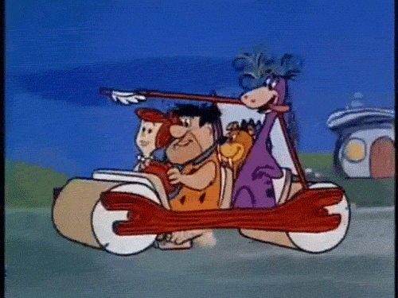

Minimaalne elujõuline toode
on toote arendamise lähenemine, mille eesmärk on kiiresti luua kõige lihtsam versioon tootest, mis sisaldab vaid neid funktsioone,
mis on vajalikud toote põhiväärtuse pakkumiseks ja kasutajate tagasiside saamiseks.
IT projektides on võimalik kasutada MVP printsiibid järgmiselt:
- Määratleda põhiväärtus:
Tuvasta, milline on toote kõige olulisem funktsionaalsus, mis lahendab kasutajate peamise probleemi.
- Minimeeri funktsioonide hulk:
Arenda välja ainult need omadused, mis on vältimatult vajalikud toote tööks ja väärtuse pakkumiseks.
- Koguge tagasisidet:
Avalda MVP kiiresti valitud sihtrühmale, et koguda tagasisidet, mille põhjal saab teha järgmisi arenduse ja täiustamise samme.
